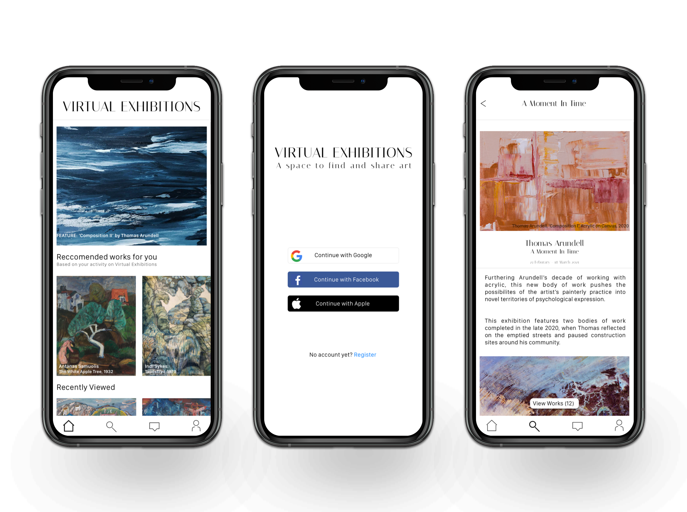
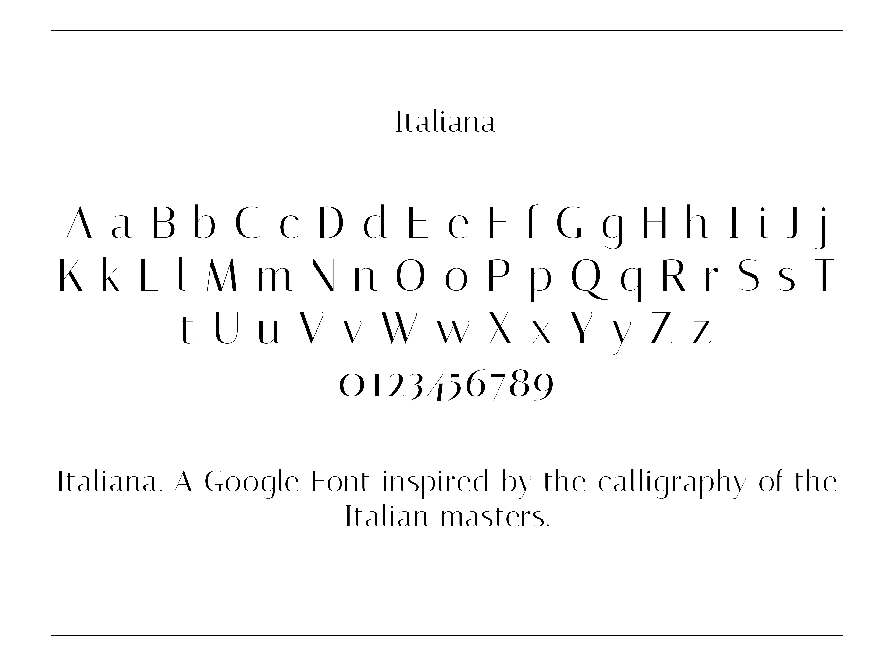
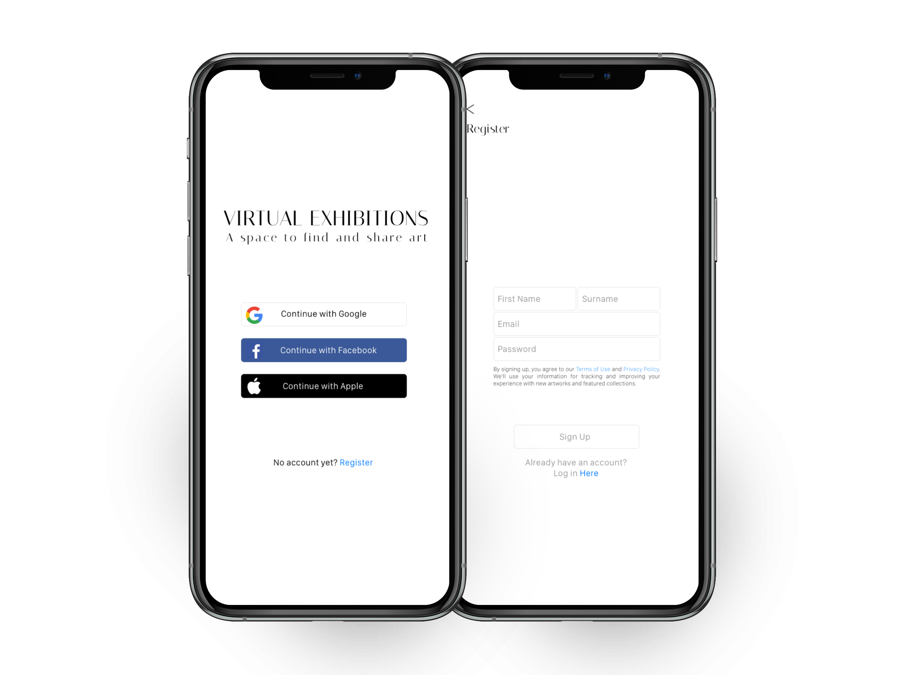
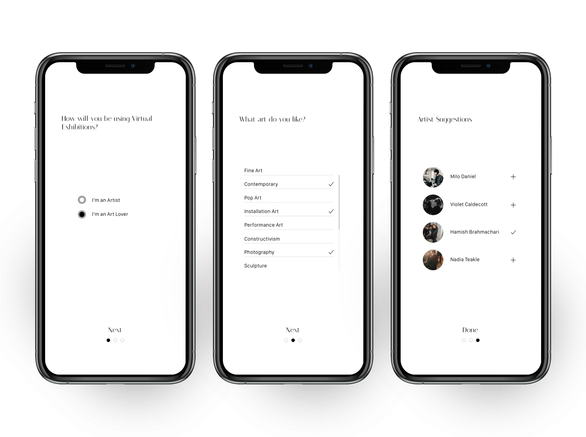
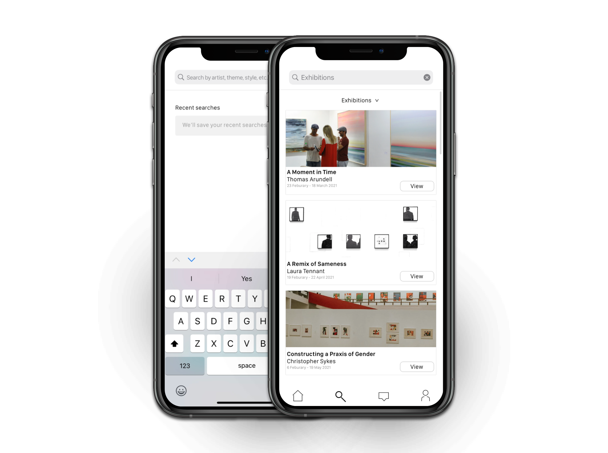
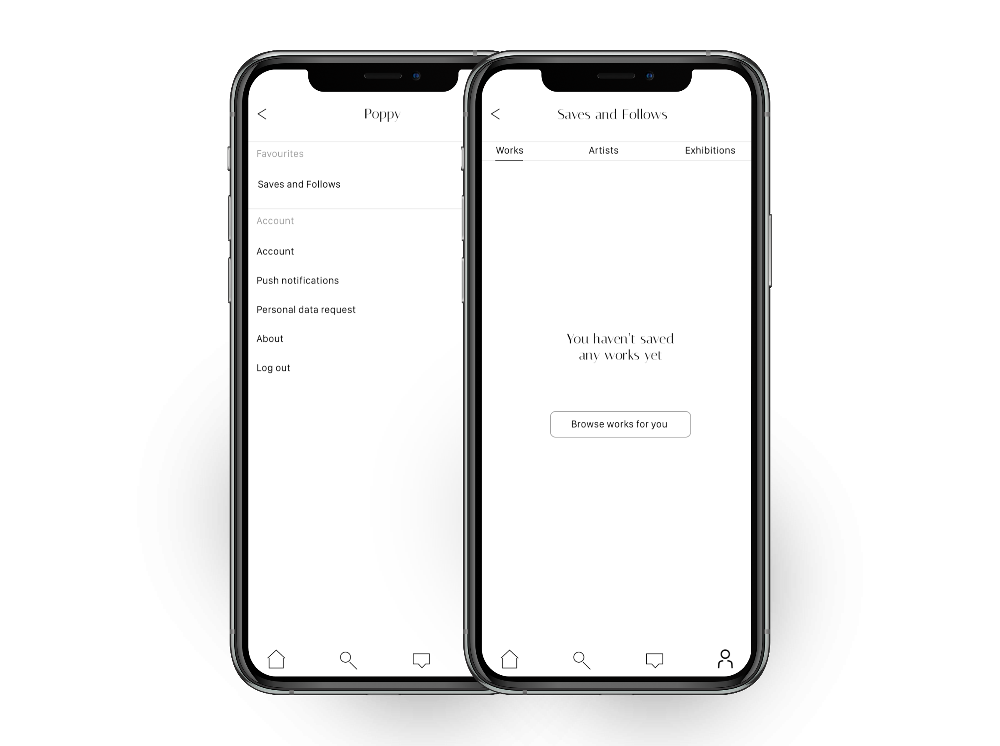

Virtual Exhibitions A Space to Find and Share Art
- ROLE | UX & UI Design
- DURATION | 1 Month
- PLATFORMS | iOS & Android
- TOOLS | Sketch, FlowMapp, InVision
PROBLEM
In the midst of a global pandemic, with no galleries open, upcoming artists and creatives are struggling more than every to begin their career and promote their artwork. Ultimately, there is a need for them to have a platform they can control which showcases their work remotely.
SOLUTION
Virtual Exhibitions is an app aimed for artists who want to share their creativity. Artists are able to market their own artwork and curate their own exhibitions. Users are able to directly contact the artists about phrasing artwork/showcasing for future exhibitions. Further, they can also support the artists by sharing their talent on other social media platforms.
TYPOGRAPHY
From the offset, I wanted to create a clear and sophisticated app. I therefore decided to use a reduced colour palette and modern typography. Ultimately, I wanted users to open the app and feel as though they were standing in a modern art gallery. Furthermore, I didn’t want any style choices to distract the viewers away from the artwork on the app. With that in mind, I stuck to monochromatic colour palette, implementing the iOS system colours on the iOS screens where necessary.
In terms of typography, for the Android screens I used ‘Roboto’ and for the iOS screens I used ‘San francisco Display’. For the headings however, I used ‘Italiana’ for both iOS and Android.
DESIGN
Sign Up/In
Onboarding
Users will have the choice to sign up as an Artist or an Art Lover. A further two questions will then be asked to ensure users recieve art suited to them on their newsfeed. The three below screens shows the onboarding for the ‘Art Lover’ user.
Search
The ‘Art Lover’ user will find exhibitions by using the search feature. Users will be able to refine their search by using the filter feature.
Profile
The ‘Art Lover’ will be able to save exhibitions and art work they have come across, so that they can revist them.
